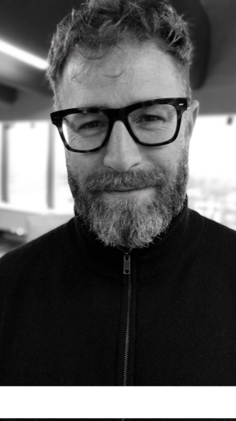

Llevo toda la vida midiendo terreno. Solo cambié el tipo de terreno.

Empecé como topógrafo: carreteras, puentes, túneles. Mi trabajo era convertir un terreno caótico en un mapa que cualquiera pudiera leer. Ahí aprendí lo único que importa de verdad: si no entiendes el porqué, el mapa miente.
Después llegué a responsable de una de las carnicerías de mayor venta de un gran grupo: dirigía el equipo y formaba a los futuros carniceros de la compañía. Ahí descubrí algo que no esperaba — lo que más me llenaba era la gente: enseñar a los que empezaban, cuidar de que cada uno creciera. Aprendí que se lidera desde el cuidado, no desde la orden.
Cuando ese proyecto terminó, me lancé a lo que siempre me había entusiasmado: la programación de bajo nivel. Entré en 42 Urduliz, la escuela sin profesores ni atajos: o lo explicas, o no lo sabes. C, memoria, punteros, git. La misma obsesión de siempre por entender cómo funciona algo por dentro.
Hoy mido un terreno nuevo: cómo se controla un agente de IA. Y como buen friki de entenderlo todo desde la raíz, no me he quedado en la superficie usándolo: me he metido hasta las tripas del sistema para saber cómo piensa, cómo gestiona su contexto, cómo interceptarlo con hooks y cómo meterlo dentro de mis propios programas. Y todo ese terreno lo he mapeado para ti, para que domines una de las tecnologías más revolucionarias y vanguardistas. No para que la uses. Para que la CONTROLES.
CodeFlow · Módulo 00
¿De qué va esto?
Claude Code es una herramienta brutal. Pero hay un problema que nadie te cuenta hasta que lo sufres: el contexto se dispara, el uso de tokens se dispara, y el agente empieza a olvidar cosas exactamente cuando más lo necesitas. Si has usado Claude Code más de dos horas seguidas, ya sabes de qué hablo.
Este módulo va de aprender a controlarlo de verdad. Cinco ejercicios progresivos donde dominas el agente capa por capa: cómo construye su contexto, cómo supervisarlo con hooks, cómo conectarlo a herramientas externas con MCP y cómo integrarlo en tu propio código C++ con el SDK.
Aquí no te voy a decir que uses .md en lugar de .pdf para ahorrar tokens, ni voy a darte una lista de mil agentes. Aquí aprendes el porqué, no solo el cómo. Sin magia, sin «confía en mí», con la lógica expuesta. Inspirado en la filosofía 42: si no puedes explicar lo que has hecho, no lo has aprendido. No se trata de que Claude haga tu trabajo — se trata de que tú demuestres que lo controlas.
Y un último consejo: dale su tiempo, sin plazos ni agobios. Esto lo haces para ti. Disfrútalo con cariño, como cuando de pequeño te sentabas en la alfombra con un tebeo de aventuras entre las manos. ¡Por Tutatis!
¿Cómo funciona esto?
Tranquilo, no hay letra pequeña, ¡y trae manual de instrucciones!
-
01
El subject es el itinerario a seguir, son las reglas del juego. Ábrelo, léelo —¡dos veces!—; en él encontrarás los 5 ejercicios que hay que hacer para finalizar el módulo. Y no te asustes si no lo entiendes todo a la primera: está hecho así a propósito (luego te cuento por qué). Es tu mapa y tu fuente de verdad.
-
02
Empieza por el primero, fácil ¿eh? Para ello usaremos Claude Code en la terminal (si usas Windows, te explicaré también cómo podrás hacerlo). Cada ejercicio se basa en el anterior y está pensado para que en cada uno adquieras una skill diferente, que te servirá para dominar cada vez mejor esta brutal herramienta.
-
03
¿No sabes ni por dónde arrancar? La Guía de Campo te orienta antes de meterte en la expedición. Pero ojo: no te da la solución — te da el camino, el contexto y consejos para no perderte.
-
04
¿Atascado y subiéndote por las paredes? Llama a Brújula, tu flamante bot-asistente. Pregúntale lo que no entiendas o pídele ayuda cuando no sepas cómo seguir: te guiará cuando no encuentres el camino. (Ojo… easter egg escondido… bajo tu responsabilidad.)
-
05
Abre la rúbrica de autoevaluación y rellena con cuidado cada apartado. Recuerda que esto es para ti, para que te diviertas y aprendas. No te ofusques ni te frustres; cuando estés cansado, déjalo — mañana podrás seguir donde lo dejaste.
Nota final: ¿Lees el subject y crees que está en klingon? Es normal, y es intencionado. Pásate por «Acerca del Subject» y te explico por qué la metodología Urduliz funciona justo así.
¿Para quién es?
Para quien se maneja con terminal, sabe usar git y lee código sin que le sangren los ojos — y quiere pasar de «usar IA» a «controlar un agente». No hace falta ser experto: hace falta ganas de entender el porqué, no solo el cómo.
Soy Mikel Zabal (mzabalm@gmail.com), estudiante de 42 Urduliz. Este material es gratis y en abierto. Si te sirve, compártelo; si encuentras una errata, dímelo — las pequeñas correcciones importan.